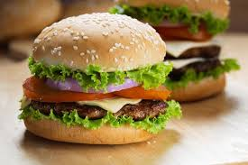

Burger Recipe

Ingridents Required:
- Burger bun (top & bottom halves)
- Beef patty (or chicken/veggie patty)
- Cheese slices (optional)
- Lettuce leaves
- Tomato slices
- Onion slices (raw or caramelized)
- Pickles (optional)
- Ketchup
- Mustard
- Mayonnaise
- Salt & pepper (for seasoning the patty)
- Cooking oil or butter (for grilling)
Steps to follow:
- Season the patty with salt and pepper on both sides.
- Heat a pan or grill over medium-high heat and add oil or butter.
- Cook the patty for about 3–4 minutes on each side, or until fully cooked.
- Place a slice of cheese on top of the patty during the last minute of cooking to melt.
- Lightly toast the burger buns on the pan or grill.
- Spread mayonnaise, ketchup, or mustard on the buns as desired.
- Place lettuce on the bottom bun, followed by tomato slices and onion.
- Add the cooked patty with melted cheese on top of the vegetables.
- Top with pickles if desired.
- Close with the top bun and serve immediately.